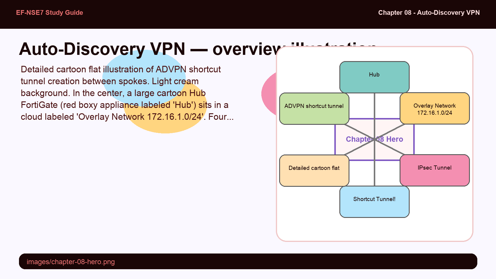
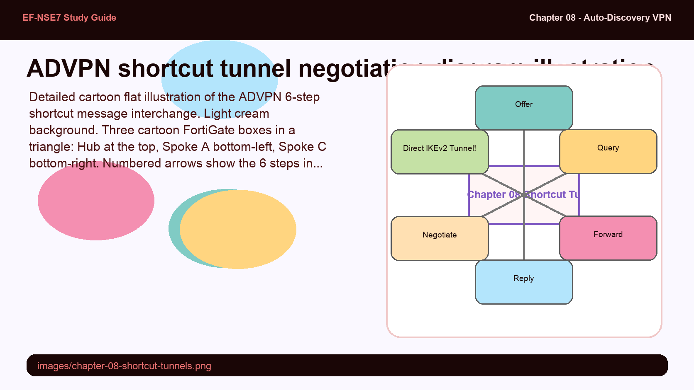
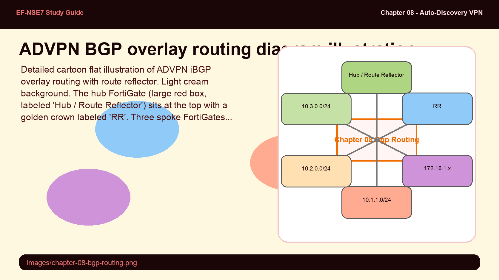

Auto-Discovery VPN
Building dynamic spoke-to-spoke shortcut tunnels with ADVPN and BGP overlay routing on FortiGate

Detailed cartoon flat illustration of ADVPN shortcut tunnel creation between spokes. Light cream background. In the center, a large cartoon Hub FortiGate (red boxy appliance labeled 'Hub') sits in a cloud labeled 'Overlay Network 172.16.1.0/24'. Four spoke cartoon routers (small FortiGate boxes labeled Spoke A, B, C, D) surround the hub, each with a solid tunnel connection to the hub (labeled 'IPsec Tunnel'). Then between Spoke A and Spoke C, a magical new tunnel materializes with sparkle lines and a lightning bolt, labeled 'Shortcut Tunnel!' in a starburst badge. Small message envelopes fly along the shortcut, showing the 6-step shortcut creation: 'offer → query → forward → reply → forward → negotiate'. An arrow from the old path (going via Hub) crosses out with a red X, showing the direct shortcut is now preferred. Fully detailed cartoon style, soft flat fills, pastel palette (red, teal, lavender, cream), bold outlines, white background.
ADVPN Architecture & Shortcut Tunnels
Traditional hub-and-spoke IPsec routes all spoke-to-spoke traffic through the hub — adding latency and consuming hub bandwidth. ADVPN (Auto-Discovery VPN) solves this by enabling spokes to discover each other and negotiate direct shortcut tunnels on demand. The hub remains the initial forwarding path, but as soon as spoke A sends traffic to spoke B, the hub detects this and triggers a shortcut negotiation — subsequent flows travel directly between spokes.
The shortcut creation follows a 6-step message interchange: offer → query → forward → reply → forward → negotiate. The hub sends an offer to the destination spoke containing the originating spoke's connection details. The destination spoke sends a query back through the hub. The hub forwards this query to the originating spoke. The originating spoke sends a reply directly to the destination spoke. The destination spoke forwards back through the hub. Both spokes then negotiate a direct IKEv2 tunnel. FortiGate roles — auto-discovery-sender (initiating spoke), auto-discovery-receiver (destination spoke), auto-discovery-forwarder (hub) — must be configured on the correct tunnel interfaces.

Detailed cartoon flat illustration of the ADVPN 6-step shortcut message interchange. Light cream background. Three cartoon FortiGate boxes in a triangle: Hub at the top, Spoke A bottom-left, Spoke C bottom-right. Numbered arrows show the 6 steps in order — each arrow has a numbered badge and message label: 1 'Offer' (Hub → Spoke C, blue arrow), 2 'Query' (Spoke C → Hub, green arrow), 3 'Forward' (Hub → Spoke A, teal arrow), 4 'Reply' (Spoke A → Spoke C direct, dashed orange arrow — the first direct hop), 5 'Forward' (Spoke C → Hub, purple arrow), 6 'Negotiate' (Spoke A ↔ Spoke C, thick glowing gold double arrow labeled 'Direct IKEv2 Tunnel!'). After the 6 steps, a thick shortcut tunnel tube appears between Spoke A and Spoke C. The hub path fades to gray with a small 'no longer needed' note. Fully detailed cartoon style, pastel palette, bold outlines, cream background.
BGP & Overlay Routing
ADVPN uses an overlay network — a virtual IP space (e.g., 172.16.1.0/24) assigned to tunnel interfaces — to route between spokes without exposing the physical underlay addresses. BGP runs over this overlay to distribute spoke prefixes across the hub-and-spoke topology. Two BGP designs are common: iBGP with a route reflector (hub acts as route reflector for all spoke iBGP clients — simpler, one AS) and eBGP (each spoke has its own ASN — more flexible, cleaner policy, allows route attribution by AS path).
Key ADVPN-BGP parameters on FortiGate: add-route enable instructs the hub to install routes to spoke overlay IPs so shortcut negotiation knows where to send offers. dst-subnet specifies the LAN subnets behind each spoke, ensuring the shortcut tunnel is created for the right destination prefixes. Non-ADVPN spokes can coexist in the same topology — they receive full routing via the hub but don't participate in shortcut negotiation.

Detailed cartoon flat illustration of ADVPN iBGP overlay routing with route reflector. Light cream background. The hub FortiGate (large red box, labeled 'Hub / Route Reflector') sits at the top with a golden crown labeled 'RR'. Three spoke FortiGates (smaller boxes) connect up to the hub via overlay tunnel lines labeled '172.16.1.x'. Each spoke has a small LAN network below it (cartoon PCs with a subnet badge: '10.1.1.0/24', '10.2.0.0/24', '10.3.0.0/24'). BGP UPDATE envelopes flow from each spoke to the hub; the hub reflects these routes back to all other spokes (reflected envelopes with a 'RR reflected' stamp). A shortcut tunnel glows directly between two spokes. The overlay address cloud above shows '172.16.1.0/24'. At bottom, two config snippets in comic-book caption boxes: 'add-route enable' and 'dst-subnet 10.x.x.0/24'. Fully detailed cartoon style, pastel palette (red, teal, amber, cream), bold outlines, white background.
Multi-Region & FortiManager Templates
Large enterprises use multi-region ADVPN where each region has its own hub, and regional hubs connect to a super-hub (or directly to each other). Spokes in region A can build shortcuts to spokes in region B by traversing the inter-hub link — the regional hub acts as both a spoke to the super-hub and a hub to its local spokes. Routing must be carefully designed to ensure BGP redistributes routes correctly at each level without creating loops.
FortiManager CLI templates are the standard way to provision ADVPN at scale. A template defines the hub and spoke configurations as variables — device-specific values (overlay IP, local LAN, ASN) are substituted per device. Template groups allow you to apply a stack of templates to hundreds of spoke devices simultaneously, ensuring consistent ADVPN configuration across the organization without manual per-device CLI. This is essential for SD-WAN and ADVPN deployments with dozens or hundreds of branch sites.